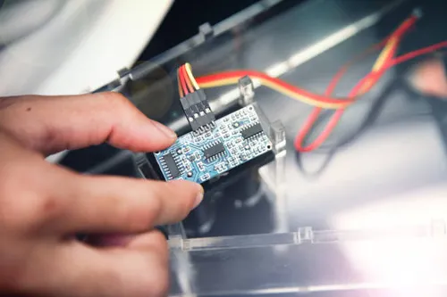

Welkom bij ons project
Dit project draait rond een interactief doolhof dat bestuurd wordt met een draagbare gyroscoop.
Project Highlights
Meet the Team

Jane - Developer

Alex - Designer
Project Logic Flowchart

Hardware & Software Used
- Arduino Uno - Core microcontroller
- Ultrasonic Sensor - Detects distance
- LED + Buzzer - Feedback
- Fritzing - Circuit design
- VS Code - Code editing
Technical Documentation
📊 Block Diagram

💻 Code Snippets
// example Arduino code
void setup() {
pinMode(LED_BUILTIN, OUTPUT);
}
void loop() {
digitalWrite(LED_BUILTIN, HIGH);
delay(1000);
digitalWrite(LED_BUILTIN, LOW);
delay(1000);
}🧠 How it works
The ultrasonic sensor detects motion. When triggered, the buzzer and LED activate. Logic is handled via Arduino code.
Gallery